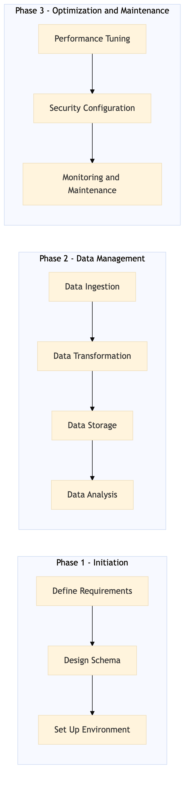

This process document outlines the management of a data warehouse using Snowflake and Redshift for Expedia Group's OTA and TMC systems.
| Trigger | Initiation of a new data warehouse project or regular maintenance cycle. |
| Outcome | A robust, scalable, and efficient data warehouse system supporting business intelligence and analytics needs. |
| Systems | Snowflake Redshift AWS SageMaker Kafka Tableau Salesforce |

Click to enlarge
| Step | Name & Pain Point | Role | System | Input | Output | KPI | Flags |
|---|---|---|---|---|---|---|---|
| 1.1 | Define Requirements Aligning business needs with technical capabilities | Data Architect | Snowflake, Redshift | Business requirements, stakeholder inputs | Data warehouse architecture document | Complete requirements documentation within 2 weeks | ⚠ Exception |
| 1.2 | Design Schema Optimizing schema for performance and scalability | Data Engineer | Snowflake, Redshift | Architecture document | Schema design document | Schema design completed within 3 weeks | ⚠ Exception |
| 1.3 | Set Up Environment Resource allocation and configuration management | DevOps Engineer | Snowflake, Redshift, AWS | Schema design document | Environment setup with necessary configurations | Environment ready within 4 weeks | ⚠ Exception |
| 1.4 | Data Ingestion Handling large volumes of data and ensuring data quality | ETL Developer | Snowflake, Redshift, Kafka, AWS SageMaker | Source data from OTA/TMC systems | Ingested data in the warehouse | 95% data ingestion success rate within 6 weeks | ◆ Decision⚠ Exception |
| 1.5 | Data Transformation Complex transformations and error handling | ETL Developer | Snowflake, Redshift, AWS SageMaker | Ingested data | Transformed and cleaned data | 90% transformation accuracy within 7 weeks | ◆ Decision⚠ Exception |
| 1.6 | Data Storage Optimizing storage costs and performance | Data Engineer | Snowflake, Redshift | Transformed data | Data stored in the warehouse | 98% storage efficiency within 8 weeks | ⚠ Exception |
| 1.7 | Data Analysis Interpreting complex data patterns | Data Analyst | Snowflake, Redshift, Tableau, Salesforce | Stored data | Business insights and reports | 85% accurate analysis within 9 weeks | ◆ Decision⚠ Exception |
| 1.8 | Performance Tuning Identifying bottlenecks and optimizing queries | Data Engineer | Snowflake, Redshift | Analysis results and performance metrics | Optimized data warehouse performance | 95% improvement in query response time within 10 weeks | ⚠ Exception |
| 1.9 | Security Configuration Balancing access and security requirements | Security Engineer | Snowflake, Redshift, AWS IAM | Access control policies | Secure data warehouse environment | Zero security breaches within 12 weeks | ⚠ Exception |
| 1.10 | Monitoring and Maintenance Proactive issue resolution and capacity planning | DevOps Engineer, Data Engineer | Snowflake, Redshift, AWS CloudWatch | Continuous monitoring tools | Regular maintenance activities | 98% system uptime within 12 weeks | ◆ Decision⚠ Exception |